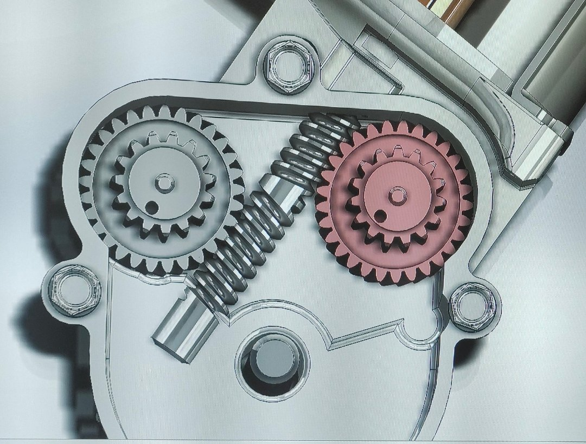
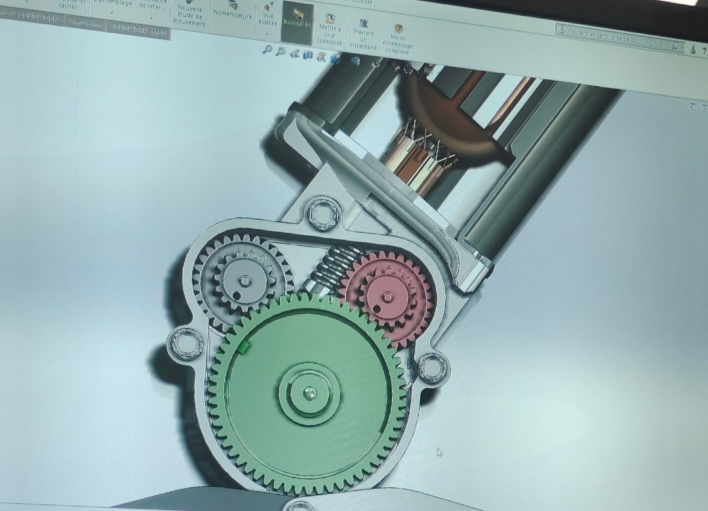
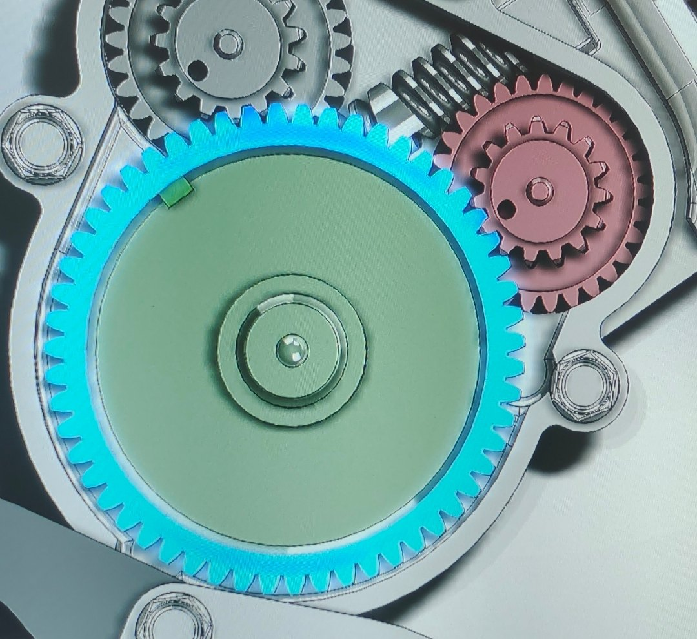

Démo · TP de sciences de l'ingénieur, CPGE TSI (septembre 2024)
Le moto-réducteur (vu de face)
La mise en tension
tension de la corde (N)consigne
tension moteur (V)courant (A)
effort tenu au courant nominal (N)vitesse de chaîne à vide (mm/s × 5)consigne de tensionselon les dents de la grande roue


